Primera propuesta
En esta propuesta los datos estan expuestos de manera que la efectividad del profesor se vea reflejada en el tamaño y en el color del circulo, donde el verde representa una efectividad mayor al 60%, el amarillo representa entre el 59-50%, y el rojo representa igual o menor al 49%.
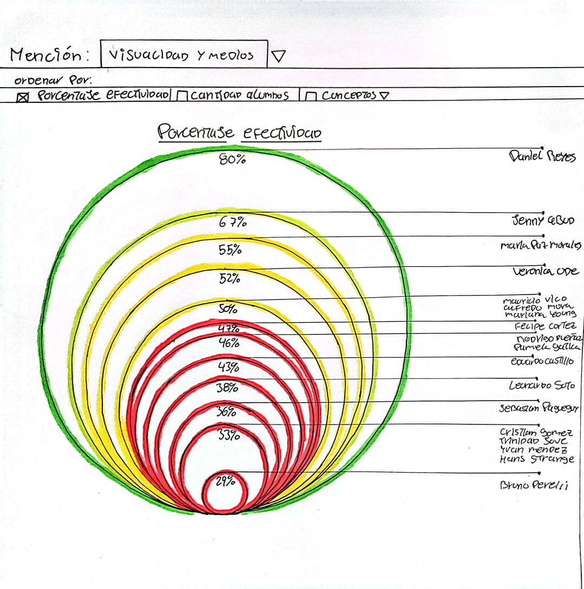
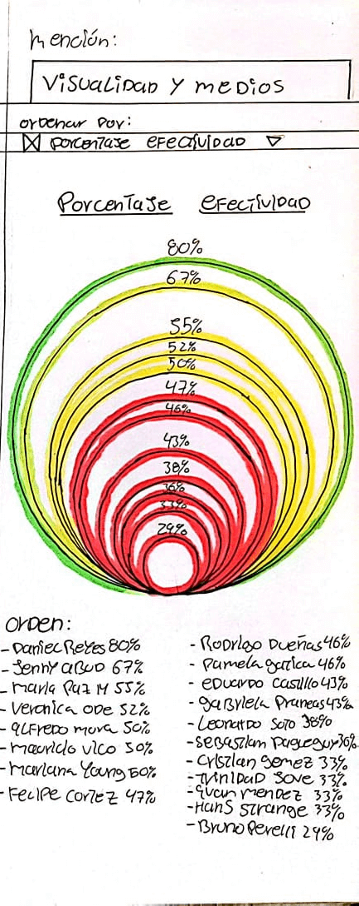
Segunda propuesta
En esta segunda propuesta, mediante un grafico de barras se representa la efectividad de cada profesor en base porcentual de cuantos estudiantes egresaron bajo su guía.
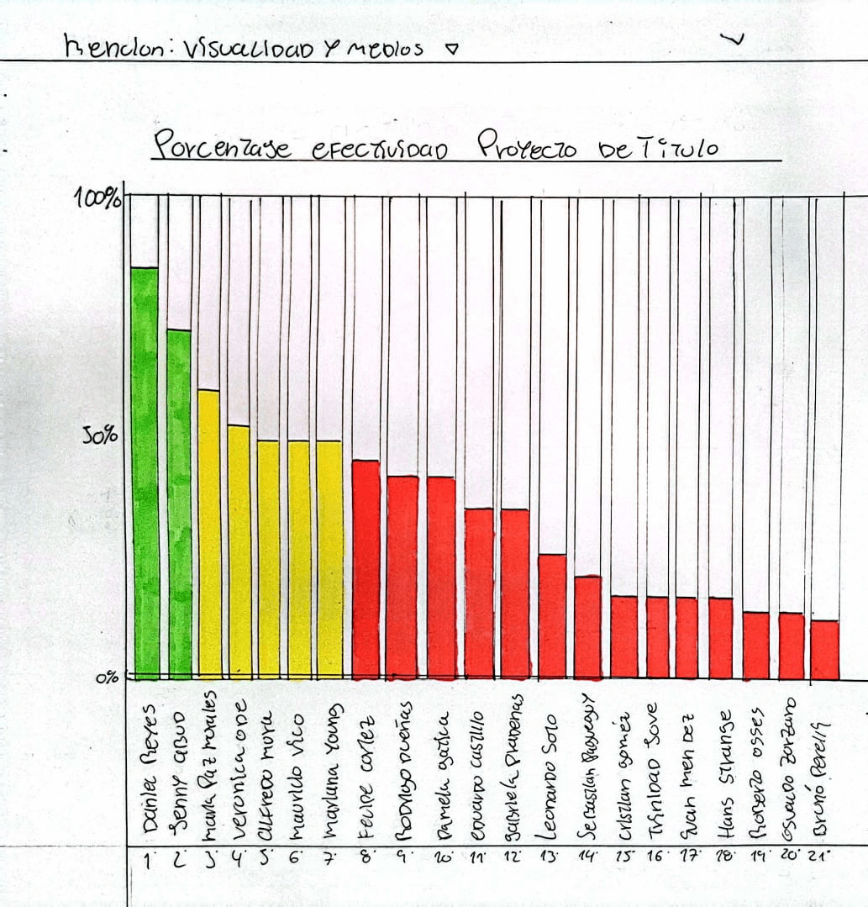
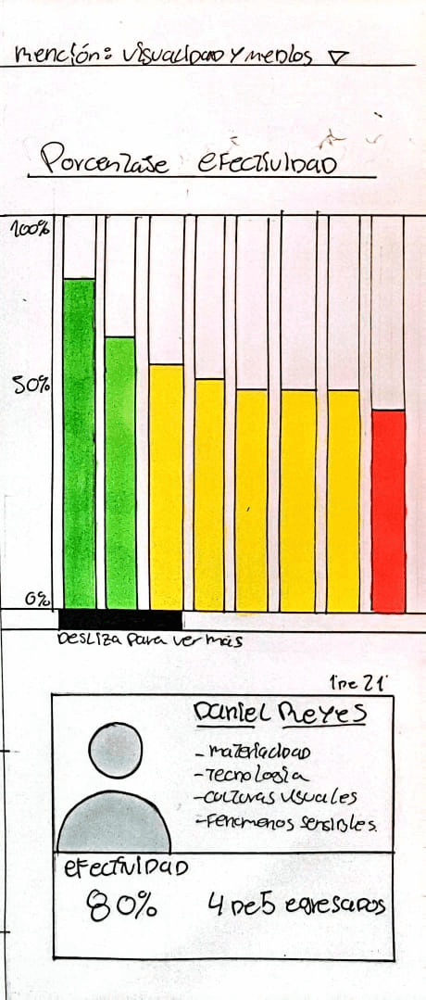
Tercera propuesta
Mediante una selección de 4 conceptos generales bases para la realización de la tesis de título, se le presentan las opciones que en teoría mejor adaptación tendrán con los gustos del estudiante. junto a una pequeña descripción de como el profe aborda dichos conceptos.
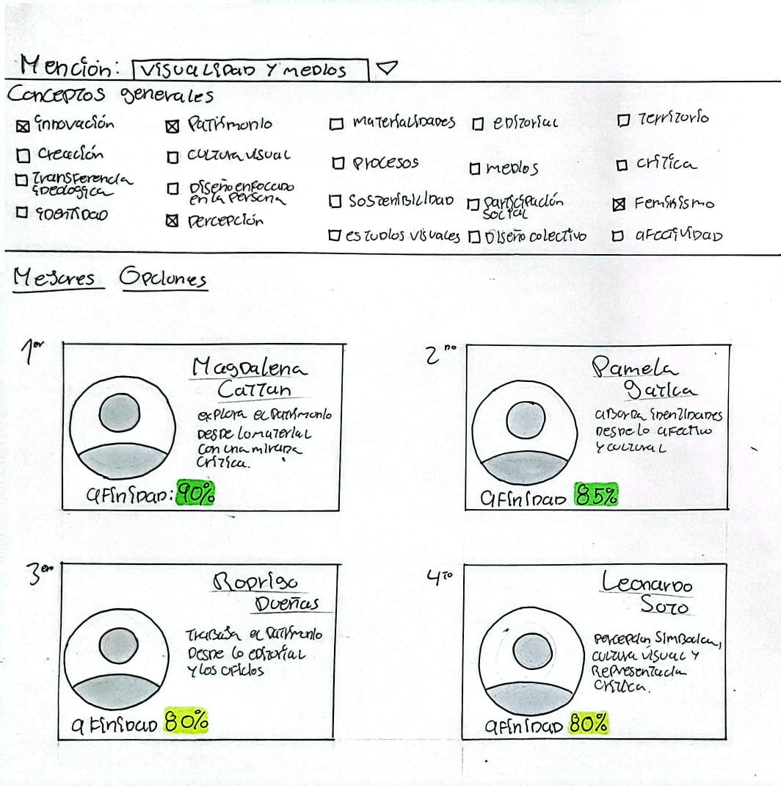
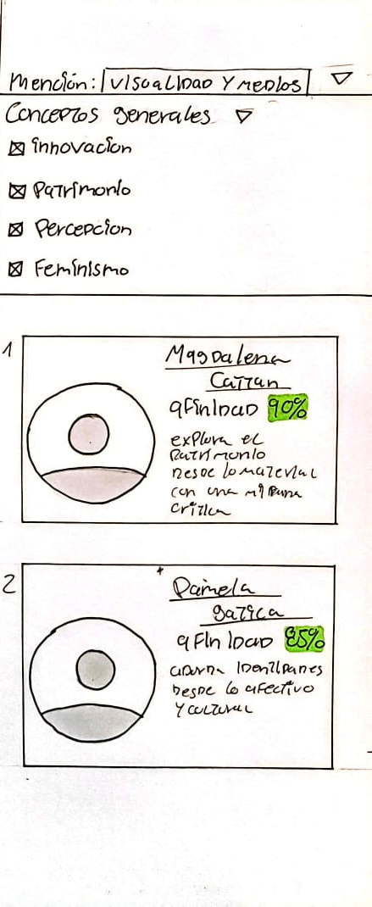
Cuarta propuesta
Utilizando un estilo inspirado en la página de mercado libre, para el estudiante que decida buscar opciones para su guia de titulo, se le presentaran todas las alternativas disponibles con la recomendación de la pagina.
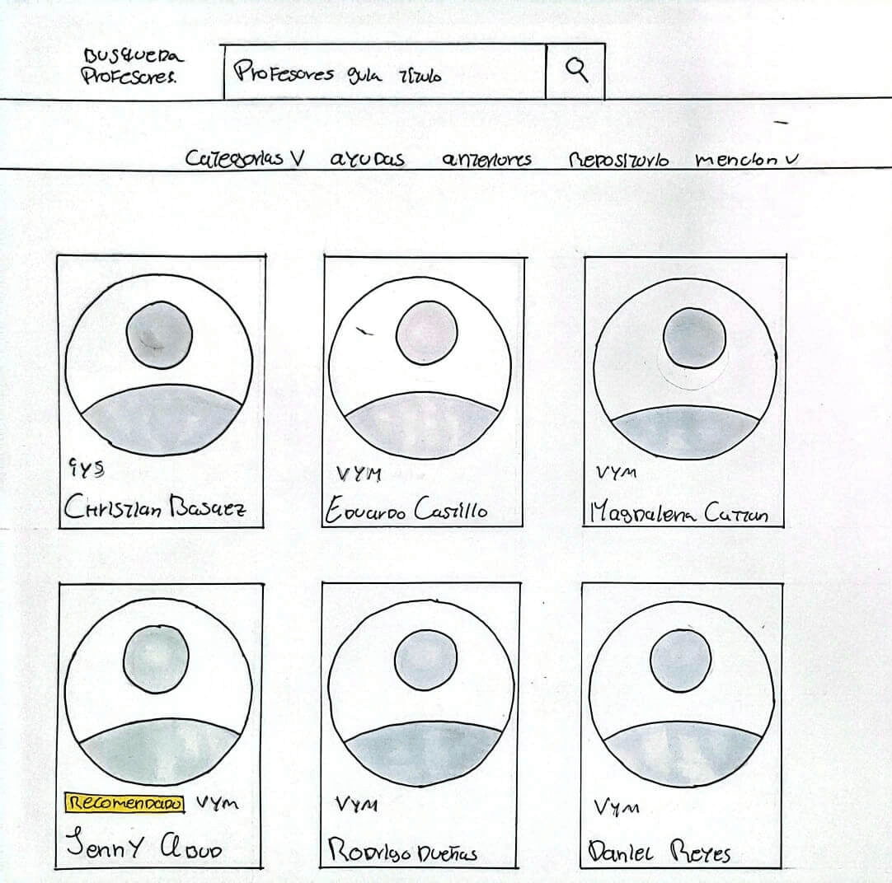
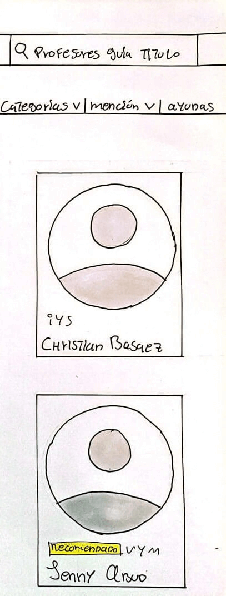
Quinta propuesta
En esta propuesta se comparan los alumnos totales contra los alumnos egresados por cada docente guia, mostrando al efectividad, popularidad y resultados de dichos docentes.
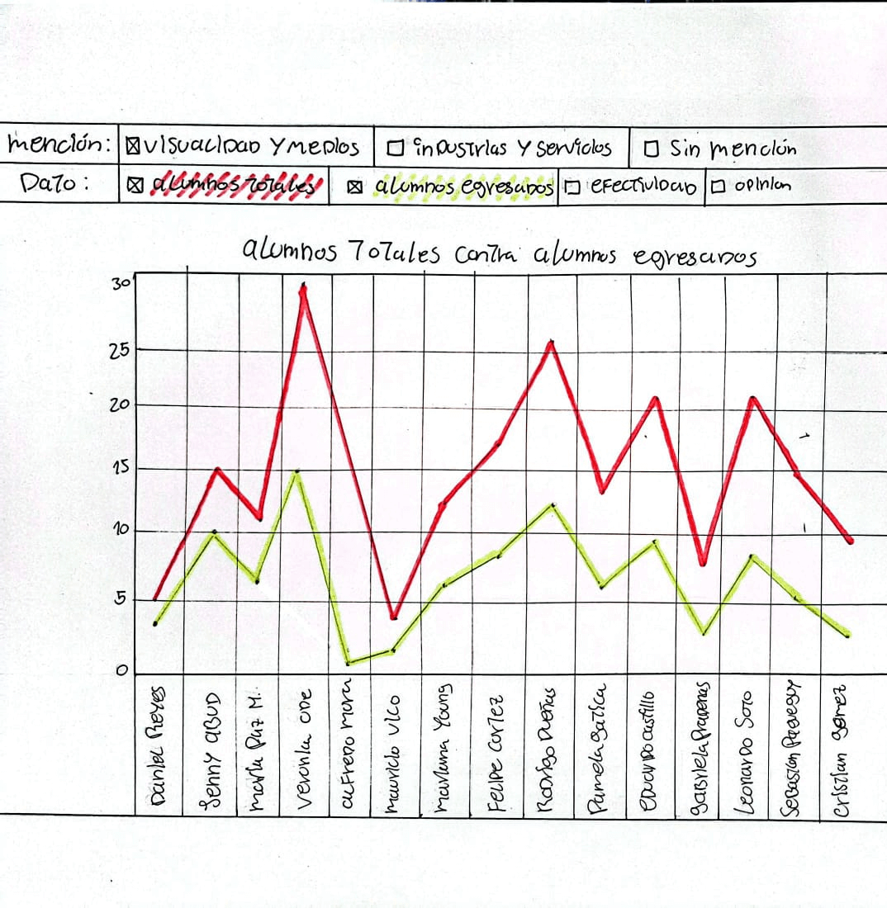
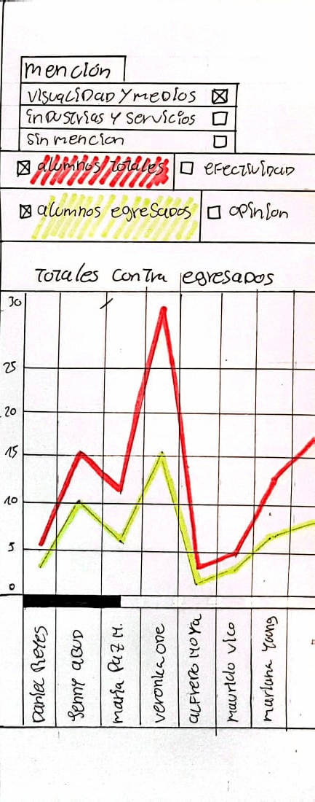
Sexta propuesta
Aquí mediante una encuesta se busca dar con el profesor guía ideal para cada estudiante, ya que aparte de los temas en común para trabajar en la tesis, se busca que encontrar un equilibrio entre profesor y estudiante, posibiltando un mayor entendimiento y una mejor comunicación a lo largo del semestre.
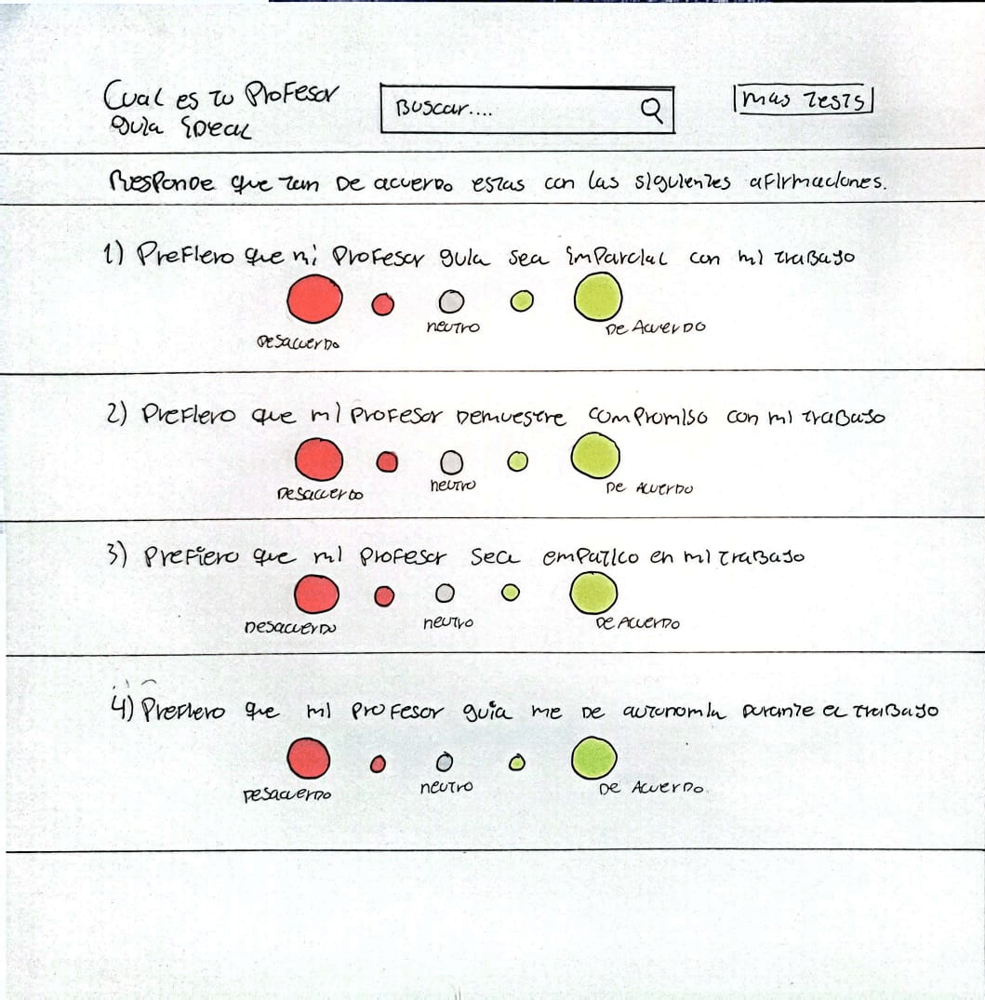
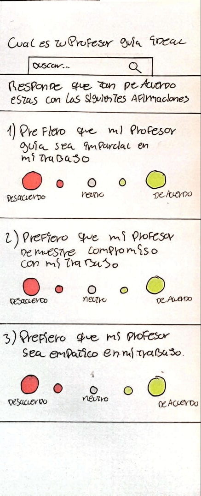